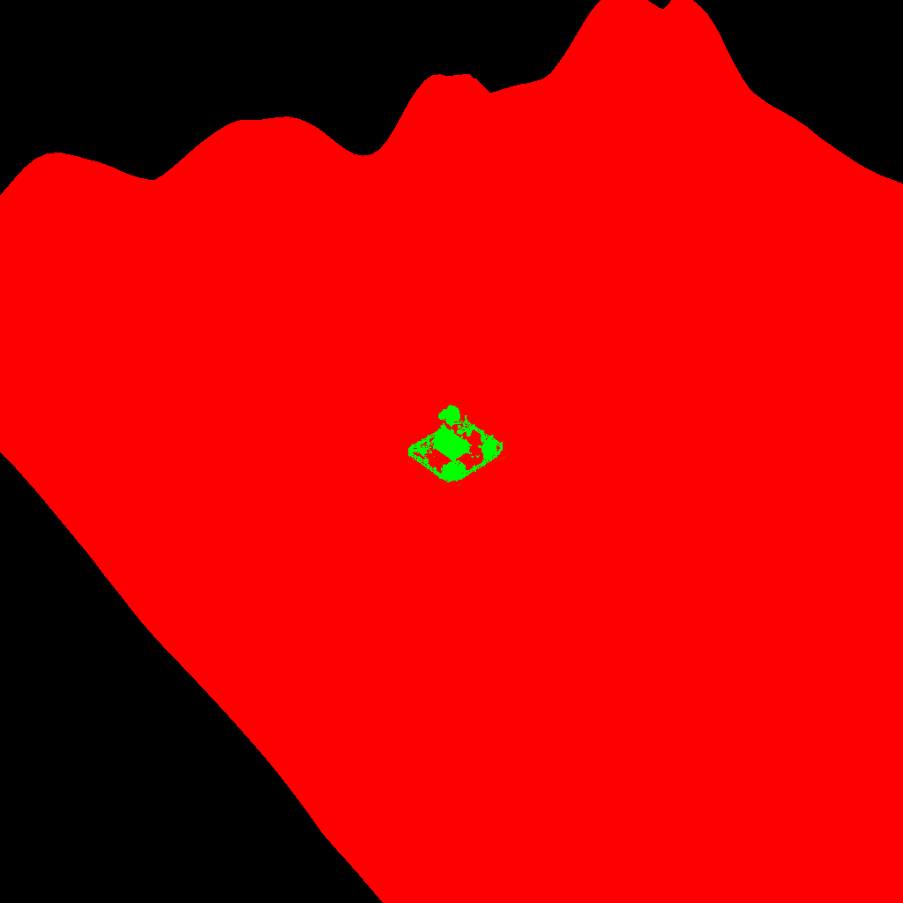
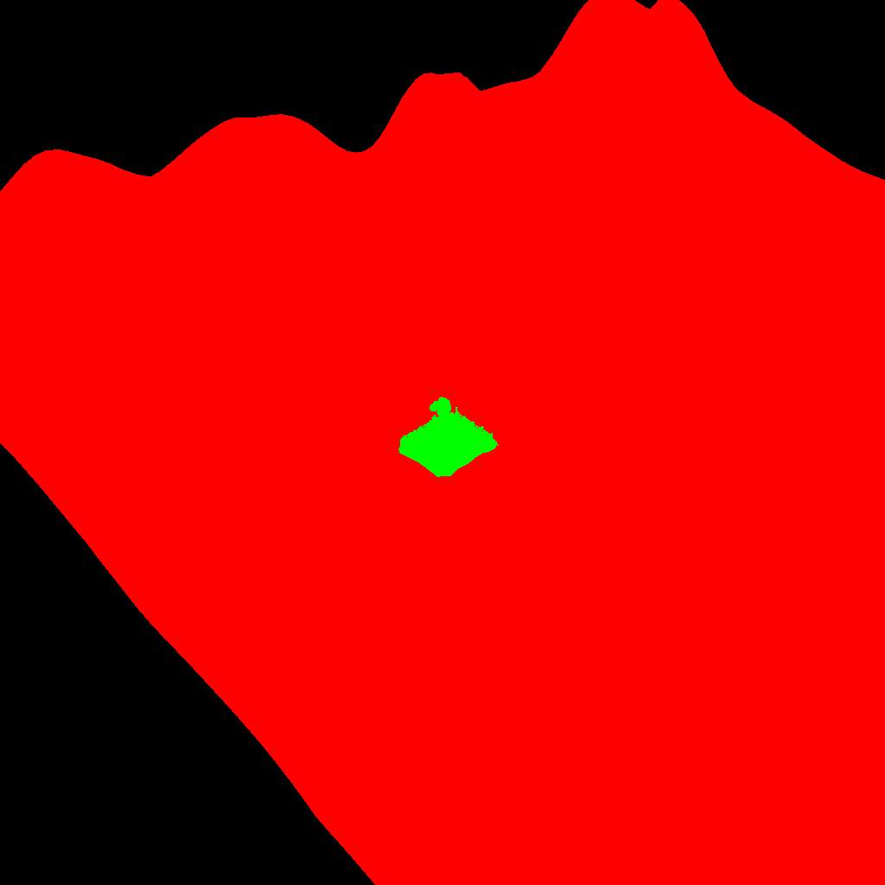
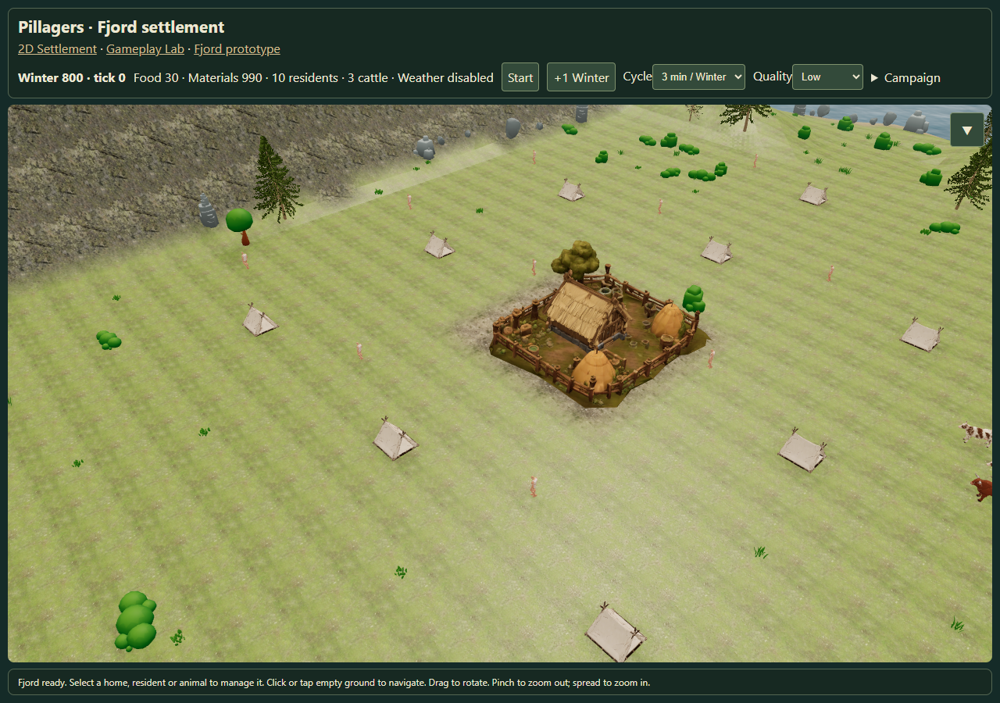
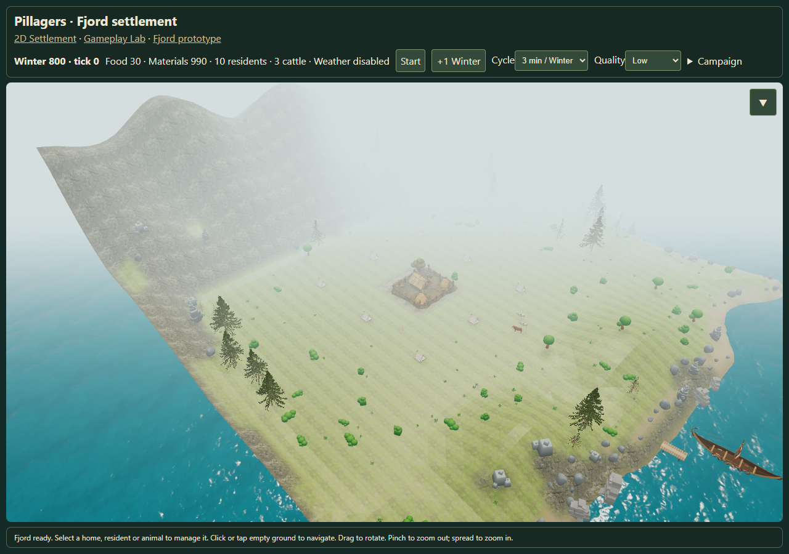

Farmyard floor at different zoom levels
Fixed depth units preserve the authored floor. Source geometry and saved terrain stay unchanged.
Report · Measurements · Open Fjord settlement

Original offset: 1767 interior pixels obscured at the distant stress view.

Corrected offset: 0 interior pixels obscured at the same view.

Actual /fjord-play, near view.

Actual /fjord-play, fully zoomed out.